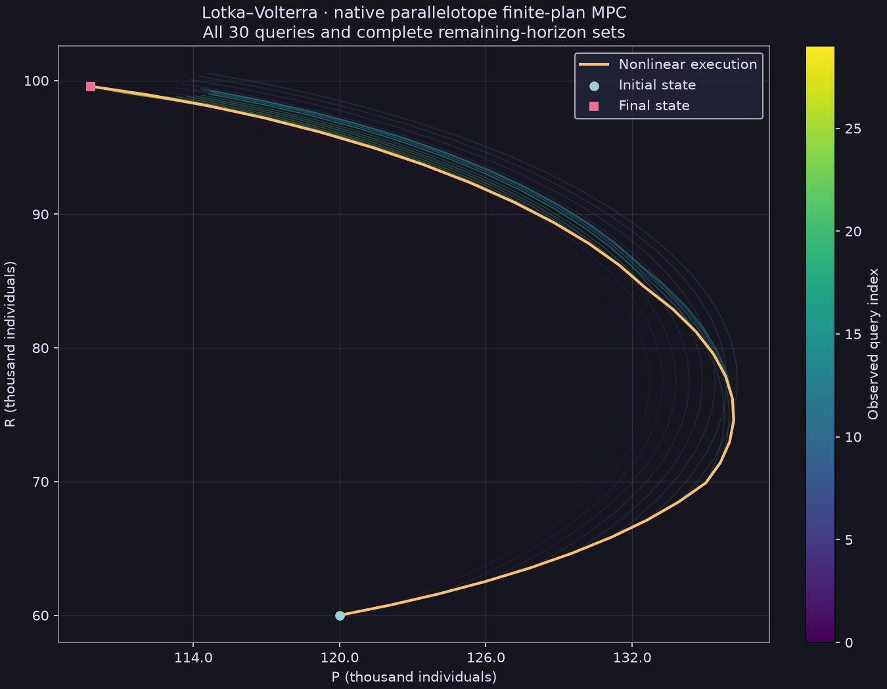
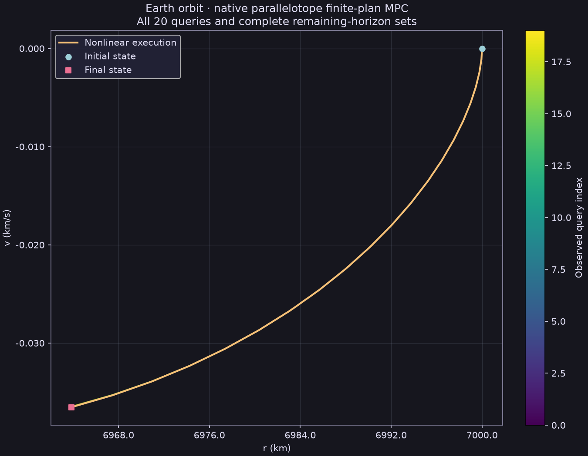
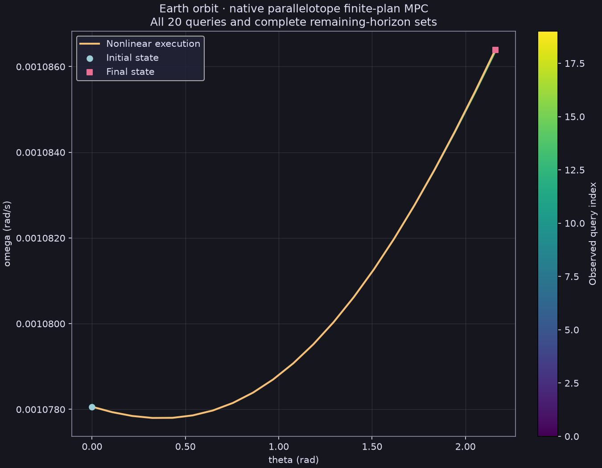
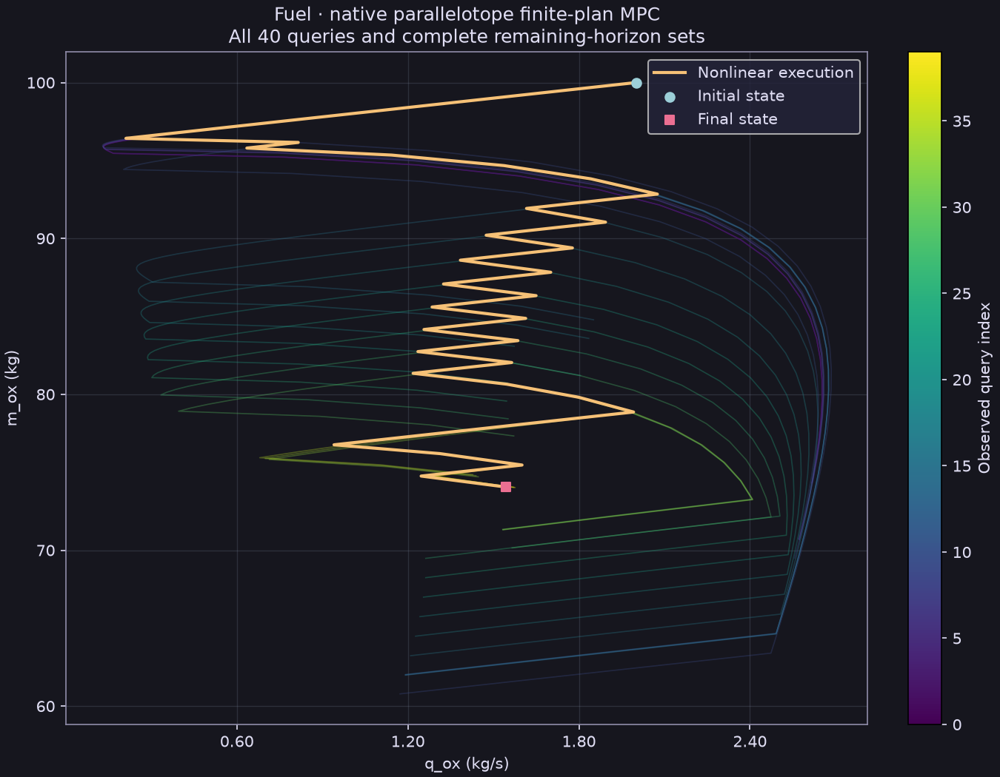
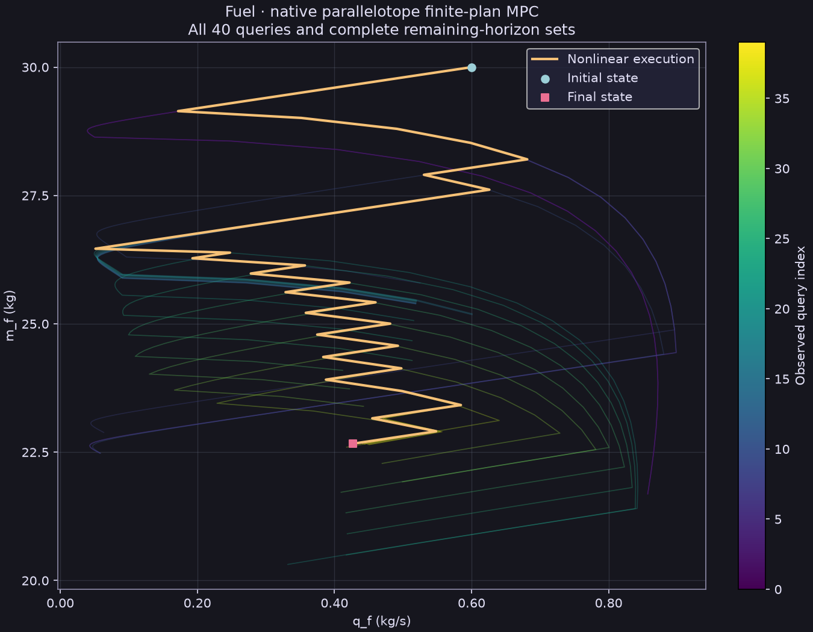

Native parallelotope finite-plan MPC
Three source-qualified saved episodes: 90 accepted native queries, with 79 incomplete and 11 complete searches over the remaining finite action product. Each task keeps its original horizon, actions and objective. This is numerical functional evidence from one sequential attempt per task.
What the controller computes
At observed state xk, the affine predictor follows xj+1 = Ajxj + Bjuj + cj. The native parallelotope-plan-select operation evaluates declared full-remaining-horizon action histories and selects the minimum recorded numerical terminal estimate plus running cost. Only the first action is held on the nonlinear plant; the next observation starts a new query. The existing candidate budget is at most 512 plans. Complete search coverage at a late short horizon does not imply global nonlinear feedback optimality.
Each linked task gives the full nonlinear model, units, original state/input bounds, action catalogue, predictor and source cost. Every raw request records the actual affine matrices, objective schedule and candidate histories. This planner is separate from the earlier continuous-action fixed-tail and F/B/I controllers.
How to read the geometry
Colored lines are selected affine plan paths, colored by observed query. Polygons project x = Qy for every state stage of every query, including initial and final stages. The saved lower/upper bounds constrain frame coordinates y. The raw bridge omitted Q; this derived figure recovers the fixed frame from the exact committed source, with its snapshot and hash retained. The source labels their role fixed-plan-trajectory-enclosure, representation parallelotope, relation outer and assurance numerical. For the two-state Lotka route Q is the identity. For the four-state orbit and fuel routes Q = [[1,1,0,0],[0,1,1,0],[0,0,1,1],[0,0,0,1]] and is fixed across all stages. We transform all 2ⁿ corners in full state space before taking their 2D convex hull. This reconstructs the source-defined fixed-plan parallelotopes from saved bounds; it does not construct F/B/I geometry or a nonlinear reachable tube. Singleton initial states and fixed controls make most polygons too narrow to see at this scale; their numerical widths remain in the figure data. The gold line is the actual nonlinear execution, which need not stay inside affine prediction bounds. A 2D projection of the orbit or fuel model still represents a four-state problem.
Functional outcomes
| Task | Holds | Incomplete / complete queries | Nonlinear task objective | Max replay endpoint difference |
|---|---|---|---|---|
| Lotka–Volterra | 30/30 | 25 / 5 | 0.09317389733423828 | 2.7e-13 |
| Earth orbit | 20/20 | 18 / 2 | 65.23210049417159 | 4.55e-12 |
| Fuel | 40/40 | 36 / 4 | 0.01318699866845395 | 2.84e-14 |
Endpoint differences are maxima across coordinates with different task units; inspect per-coordinate values in the manifest. Independent review reproduced all six common/tight replay requests with the qualified replay ELF, checked all 90 nested raw hashes, original task/action/horizon/graph identities, affine recurrences, candidate-list minima and source costs. Sampled state and control bound violations were zero. These are binary64 numerical and sampled diagnostics, with no validated enclosure, continuous safety, global optimality or performance conclusion.
Lotka–Volterra
State dimension 2; original horizon 30, hold length 0.1 day. Attempt syn-nl-lv-01-20261113T125510Z-a662b9b4. All algorithm, postcheck and rendering statuses complete; both common and tight replays complete.
Original raw attempt ZIP · Complete mathematical task · All plotted numerical values and raw response hashes · State and control traces

First-query check: x₀ = [120.0, 60.0], u₀ = [0.025]; the recorded affine recurrence gives x₁ = [121.70061953288987, 61.001215386986715], while the nonlinear held execution gives [122.07280897621695, 60.76228252569658]. The raw query contains A, B and c to recompute the prediction.

Earth orbit
State dimension 4; original horizon 20, hold length 100 s. Attempt earth-orbit-20261113T125522Z-ea672e64. All algorithm, postcheck and rendering statuses complete; both common and tight replays complete.
Original raw attempt ZIP · Complete mathematical task · All plotted numerical values and raw response hashes · State and control traces

First-query check: x₀ = [7000.0, 0.0, 0.0, 0.0010780614796240577], u₀ = [-0.5, -0.5]; the recorded affine recurrence gives x₁ = [6999.946456956326, -0.0011057658743851562, 0.1077995458307402, 0.001077935114679166], while the nonlinear held execution gives [6999.94645705425, -0.001105762173735992, 0.10779954578876438, 0.0010779351130110499]. The raw query contains A, B and c to recompute the prediction.


Fuel
State dimension 4; original horizon 40, hold length 0.5 s. Attempt syn-nl-fuel-01-20261113T125537Z-e95cd5b9. All algorithm, postcheck and rendering statuses complete; both common and tight replays complete.
Original raw attempt ZIP · Complete mathematical task · All plotted numerical values and raw response hashes · State and control traces

First-query check: x₀ = [100.0, 30.0, 2.0, 0.6], u₀ = [0.0, 0.0]; the recorded affine recurrence gives x₁ = [99.11519127709856, 29.73455738312957, 1.5576940934753303, 0.4673082280425991], while the nonlinear held execution gives [99.11520313229558, 29.73456093968867, 1.557601566147787, 0.46728046984433613]. The raw query contains A, B and c to recompute the prediction.


Source and installed-component qualification
Controller source d6fc399abcca49d4ac96fabeed9d8878d11cf326. Five components (model, polyhedral, nominal_forward, nominal_tube and finite_plan_parallelotope) were selectively rebuilt, then copied into an isolated installed prefix. The remaining imported closure reuses source-equivalent archives from SDK producer 3d7fff0c01ac346000ca6a97ad8d9fc654f38032; header and object-input equality or recorded formatting-token parity qualify that reuse. This is an actual selected component overlay with fresh bridge/replay consumers, not a fresh whole SDK build. The 48-target / 47-archive imported closure, link maps, source inputs, compiler/binary/library hashes and runtime readback are retained below.
Runtime readback: Release, HiGHS and Qhull enabled, CasADi disabled. Availability flags do not establish that those optional solvers were invoked; these queries record the public native finite-plan operation. All BLAS/OpenMP threads were one; the supervised worker used a 300-second wall/CPU budget. That worker budget excludes replay, checks and rendering. Address-space limits are not physical RAM limits. Successful shared worker stderr was empty; these episodes do not themselves test failed-query stderr retention.
Derived fixed-frame receipt · Exact source frame snapshot · Qualification receipt and executable hashes · Source equivalence inventory · Imported closure · Library hashes · Raw runtime readback, including the failed protocol probe · Actual policy link map · Actual replay link map
Reproduce these figures without running a controller
python scripts/reports/native_parallelotope_functional.py --check
python scripts/reports/native_parallelotope_functional.py --render --output /tmp/native-parallelotope-figuresThe reader verifies the frozen member hashes and renders only saved data. Original attempt ZIPs preserve every original file, including the Orbit PNG whose title incorrectly said “backend not recorded”. The new figures above give the actual native operation a correct title without changing the old raw bytes. Prior captures and failed attempts remain retained separately. Data-only publication changes no public API, dependency, installation or native executable; no package release is needed. Review, exact-head CI, main-only Pages deployment and live URL/hash verification remain separate publication gates.
Bundle manifest and member hashes · Frozen file hashes · Saved-data renderer source